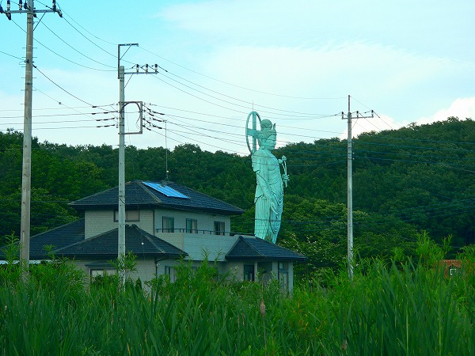
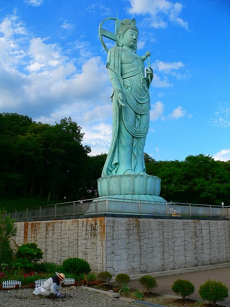
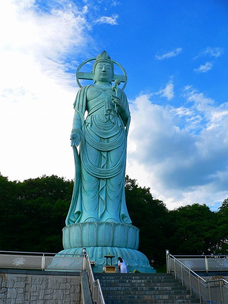
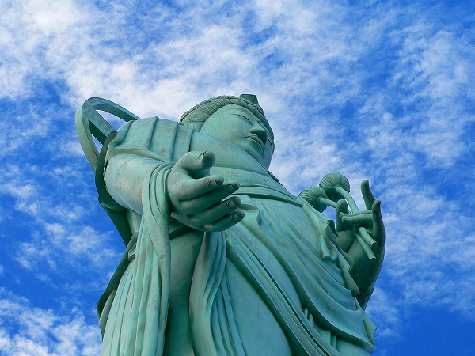
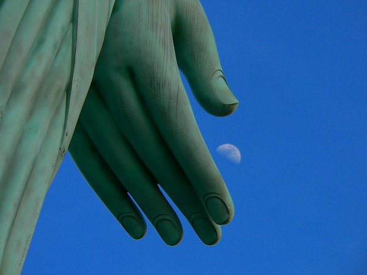
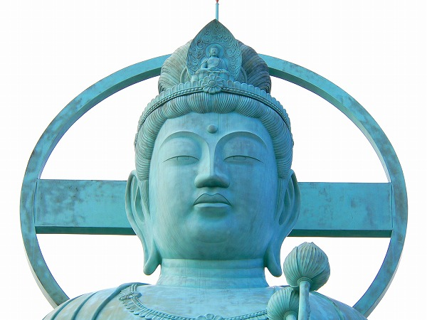
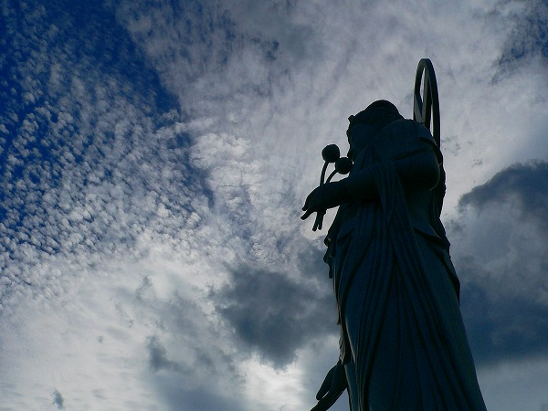

みろく観音/栃木県那須町
今や伊豆と並んで東日本屈指の珍スポット多発地帯になってしまった那須。
そんな那須に若手大観音がおわす。
場所は那須の裏名所として一部の好事家の間で名高い金ぴかのでかいカミサマの近く。
ココ、当サイトでも紹介した事があるが現在は削除しました。色々ありまして…
で、みろく観音。
ここは例のカミサマのある通りから少し奥まったところにあり、大きさの割にはあまり目立たない。

細い未舗装道の先に見えてくる大観音、いかにも出来たばっかりな感じ。
脇には「大観音館」という建物があり、信者の方が色々と説明してくれた。
いわく、この大観音は人類を救済する為のナントカカントカ…
…スイマセン。お話のスケールが大きすぎて全く理解出来ませんでした…
詳しくはパンフレットを見て、っと。
…スイマセン。これまたお話のスケールが大きすぎて全く理解出来ませんでした…
え〜とみろく愛光会という団体が立てたそうです。
で、早速大観音に参拝。

台座を含めた総高さは23メートル。像高は18メートル。大きさからいうとギリ胎内巡りが出来るサイズなのだが、まあ、鋳造仏だしそこは無理をせず胎内巡りはなし。
無理してくれても当方は全然ウェルカムなんですけど。
2000（平成12）年生まれ。人間だったら小学生だが弥勒サマなのでこの貫禄。

20世紀最後の大観音、ということになろうか。

ここの教団は基本神道で弥勒菩薩を祀るという不思議なスタンスを貫いている。

弥勒菩薩は地球を救うことになっているが、その前に月を救っているようです。

ちなみにこの大観音の開眼が行われた日は皆既月食だったとか。
いや。だからどうだという深い意味はないんですけど。

秋のような雲をバックに起立する観音サマ。
って梅雨だったんですけどね。
数多くの大仏、大観音を輩出した20世紀、大仏史観的には間違いなく大仏革命の世紀といっても過言ではないだろう。
そんな20世紀大仏の大トリの大観音の雄姿をいつまでも飽きることなく眺めていた。
2007.6.
珍寺大道場 HOME